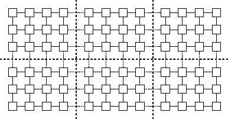
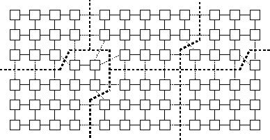
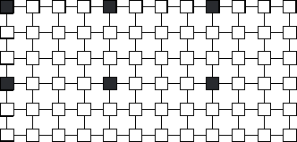
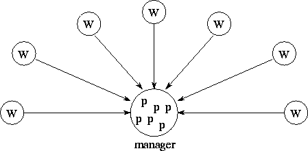

![[DBPP]](pictures//asm_color_tiny.gif)


![[Search]](pictures//search_motif.gif)
In the fourth and final stage of the parallel algorithm design process, we specify where each task is to execute. This mapping problem does not arise on uniprocessors or on shared-memory computers that provide automatic task scheduling. In these computers, a set of tasks and associated communication requirements is a sufficient specification for a parallel algorithm; operating system or hardware mechanisms can be relied upon to schedule executable tasks to available processors. Unfortunately, general-purpose mapping mechanisms have yet to be developed for scalable parallel computers. In general, mapping remains a difficult problem that must be explicitly addressed when designing parallel algorithms.
Our goal in developing mapping algorithms is normally to minimize total execution time. We use two strategies to achieve this goal:
The mapping problem is known to be NP -complete, meaning that no computationally tractable (polynomial-time) algorithm can exist for evaluating these tradeoffs in the general case. However, considerable knowledge has been gained on specialized strategies and heuristics and the classes of problem for which they are effective. In this section, we provide a rough classification of problems and present some representative techniques.

Figure 2.16: Mapping in a grid problem in which each task performs the
same amount of computation and communicates only with its four
neighbors. The heavy dashed lines delineate processor boundaries.
The grid and associated computation is partitioned to give each
processor the same amount of computation and to minimize off-processor
communication.
Many algorithms developed using domain decomposition techniques feature a fixed number of equal-sized tasks and structured local and global communication. In such cases, an efficient mapping is straightforward. We map tasks in a way that minimizes interprocessor communication (Figure 2.16); we may also choose to agglomerate tasks mapped to the same processor, if this has not already been done, to yield a total of P coarse-grained tasks, one per processor.
In more complex domain decomposition-based algorithms with variable amounts of work per task and/or unstructured communication patterns, efficient agglomeration and mapping strategies may not be obvious to the programmer. Hence, we may employ load balancing algorithms that seek to identify efficient agglomeration and mapping strategies, typically by using heuristic techniques. The time required to execute these algorithms must be weighed against the benefits of reduced execution time. Probabilistic load-balancing methods tend to have lower overhead than do methods that exploit structure in an application.
The most complex problems are those in which either the number of tasks or the amount of computation or communication per task changes dynamically during program execution. In the case of problems developed using domain decomposition techniques, we may use a dynamic load-balancing strategy in which a load-balancing algorithm is executed periodically to determine a new agglomeration and mapping. Because load balancing must be performed many times during program execution, local algorithms may be preferred that do not require global knowledge of computation state.
Algorithms based on functional decomposition often yield computations consisting of many short-lived tasks that coordinate with other tasks only at the start and end of execution. In this case, we can use task-scheduling algorithms, which allocate tasks to processors that are idle or that are likely to become idle.
A wide variety of both general-purpose and application-specific load-balancing techniques have been proposed for use in parallel algorithms based on domain decomposition techniques. We review several representative approaches here (the chapter notes provide references to other methods), namely recursive bisection methods, local algorithms, probabilistic methods, and cyclic mappings. These techniques are all intended to agglomerate fine-grained tasks defined in an initial partition to yield one coarse-grained task per processor. Alternatively, we can think of them as partitioning our computational domain to yield one subdomain for each processor. For this reason, they are often referred to as partitioning algorithms.
Recursive bisection techniques are used to partition a domain (e.g., a finite element grid) into subdomains of approximately equal computational cost while attempting to minimize communication costs, that is, the number of channels crossing task boundaries. A divide-and-conquer approach is taken. The domain is first cut in one dimension to yield two subdomains. Cuts are then made recursively in the new subdomains until we have as many subdomains as we require tasks. Notice that this recursive strategy allows the partitioning algorithm itself to be executed in parallel.
The most straightforward of the recursive bisection techniques is recursive coordinate bisection, which is normally applied to irregular grids that have a mostly local communication structure. This technique makes cuts based on the physical coordinates of grid points in the domain, at each step subdividing along the longer dimension so that if (for example) the cut is made along the x dimension, grid points in one subdomain will all have an x -coordinate greater than grid points in the other. This approach has the advantages of being simple and inexpensive. It also does a good job of partitioning computation. A disadvantage is that it does not optimize communication performance. In particular, it can generate long, skinny subdomains, which if an algorithm has significant local communication will result in more messages than will a decomposition that generates square subdomains.
A variant of recursive bisection called unbalanced recursive bisection attempts to reduce communication costs by forming subgrids that have better aspect ratios. Instead of automatically dividing a grid in half, it considers the P-1 partitions obtained by forming unbalanced subgrids with 1/P and (P-1)/P of the load, with 2/P and (P-2)/P of the load, and so on, and chooses the partition that minimizes partition aspect ratio. This method increases the cost of computing the partition but can reduce communication costs. Plate 1
shows a mapping onto 64 processors constructed by using unbalanced recursive bisection. In this instance, the grid in question is an irregular finite element mesh generated for a superconductivity simulation.

(GIF 235573 bytes; RGB 1142568 bytes.) Plate 1: The unbalanced recursive bisection algorithm, applied here to a superconductivity simulation in which increased computational load corresponds to an increased number of triangular elements in certain areas of the grid. The recursive partitioning yields sixty four subdomains, with for example the first partition descending vertically between subdomains 28 and 5. Image courtesy of P. Plassmann.
Another technique, called recursive graph bisection
, can be
useful in the case of more complex unstructured grids, for example,
finite element meshes. This technique uses connectivity information
to reduce the number of grid edges crossing subdomain boundaries, and
hence to reduce communication requirements. A grid is treated as a
graph with N
vertices (grid points)  . The algorithm first
identifies the two extremities of the graph, that is, the two vertices
that are the most separated in terms of graph distance. (The graph
distance between two vertices is the smallest number of edges that
must be traversed to go between them.) Each vertex is then assigned
to the subdomain corresponding to the closer extremity. Another
algorithm called recursive spectral bisection
is even
better in many circumstances (see the chapter notes for references).
Plate 2
. The algorithm first
identifies the two extremities of the graph, that is, the two vertices
that are the most separated in terms of graph distance. (The graph
distance between two vertices is the smallest number of edges that
must be traversed to go between them.) Each vertex is then assigned
to the subdomain corresponding to the closer extremity. Another
algorithm called recursive spectral bisection
is even
better in many circumstances (see the chapter notes for references).
Plate 2
shows a partition computed using the latter algorithm for the grid of Figure 2.9.

(GIF 34643 bytes; RGB 131183 bytes.) Plate 2: The spectral bisection partitioning algorithm applied to a finite element mesh generated for an assembly part. Image courtesy of Z. Johan.

Figure 2.17: Load balancing in a grid problem. Variable numbers of
grid points are placed on each processor so as to compensate for load
imbalances. This sort of load distribution may arise if a local
load-balancing scheme is used in which tasks exchange load information
with neighbors and transfer grid points when load imbalances are
detected.
The techniques just described are relatively expensive because they require global knowledge of computation state. In contrast, local load-balancing algorithms compensate for changes in computational load using only information obtained from a small number of neighboring processors. For example, processors may be organized in a logical mesh; periodically, each processor compares its computational load with that of its neighbors in the mesh and transfers computation if the difference in load exceeds some threshold. Figure 2.17 and Plate 3
show load distributions produced by such schemes.

(GIF 27606 bytes; RGB 133673 bytes.) Plate 3: A dynamic, local load-balancing algorithm applied to a weather model. This shows the situation after grid points have migrated to compensate for a ``hot spot'' slightly to the left of the center of the grid. Image courtesy of J. Michalakes.
Because local algorithms are inexpensive to operate, they can be useful in situations in which load is constantly changing. However, they are typically less good at balancing load than global algorithms and, in particular, can be slow to adjust to major changes in load characteristics. For example, if a high load suddenly appears on one processor, multiple local load-balancing operations are required before load ``diffuses'' to other processors.
A particularly simple approach to load balancing is to allocate tasks to randomly selected processors. If the number of tasks is large, we can expect that each processor will be allocated about the same amount of computation. Advantages of this strategy are its low cost and scalability. Disadvantages are that off-processor communication is required for virtually every task and that acceptable load distribution is achieved only if there are many more tasks than there are processors. The strategy tends to be most effective when there is relatively little communication between tasks and/or little locality in communication patterns. In other cases, probabilistic methods tend to result in considerably more communication than do other techniques.
If we know both that computational load per grid point varies and that there is significant spatial locality in load levels, then a cyclic (or scattered, as it is sometimes called) mapping of tasks to processors can be appropriate. That is, each of P processors is allocated every P th task according to some enumeration of the tasks (Figure 2.18). This technique is a form of probabilistic mapping. The goal is that, on average, each processor will be allocated about the same computational load. The benefits of improved load balance may need to be weighed against increased communication costs due to reduced locality. Block cyclic distributions are also possible, in which blocks of tasks are allocated to processors.

Figure 2.18: Using a cyclic mapping for load balancing in a grid
problem, when executing on 12 processors. Tasks mapped to a single
processor are shaded. Notice that with this mapping, all
communications are with tasks located on different processors
(assuming a five-point stencil).
Task-scheduling algorithms can be used when a functional decomposition yields many tasks, each with weak locality requirements. A centralized or distributed task pool is maintained, into which new tasks are placed and from which tasks are taken for allocation to processors. In effect, we reformulate the parallel algorithm so that what were originally conceived of as tasks become data structures representing ``problems,'' to be solved by a set of worker tasks, typically one per processor.
The most critical (and complicated) aspect of a task-scheduling algorithm is the strategy used to allocate problems to workers. Generally, the chosen strategy will represent a compromise between the conflicting requirements for independent operation (to reduce communication costs) and global knowledge of computation state (to improve load balance). We discuss manager/worker, hierarchical manager/worker, and decentralized approaches.

Figure 2.19: Manager/worker load-balancing structure. Workers
repeatedly request and process problem descriptions; the manager
maintains a pool of problem descriptions ( p) and responds to
requests from workers.
Figure 2.19 illustrates a particularly simple task scheduling scheme that is nevertheless effective for moderate numbers of processors. This strategy was used previously in Section 1.4.4. A central manager task is given responsibility for problem allocation. Each worker repeatedly requests and executes a problem from the manager. Workers can also send new tasks to the manager for allocation to other workers. The efficiency of this strategy depends on the number of workers and the relative costs of obtaining and executing problems. Efficiency can be improved by prefetching problems so as to overlap computation and communication, and by caching problems in workers, so that workers communicate with the manager only when no problems are available locally.
A variant of the manager/worker scheme divides workers into disjoint sets, each with a submanager. Workers request tasks from submanagers, which themselves communicate periodically with the manager and with other submanagers to balance load between the sets of processors for which they are responsible.
In completely decentralized schemes, there is no central manager. Instead, a separate task pool is maintained on each processor, and idle workers request problems from other processors. In effect, the task pool becomes a distributed data structure that is accessed by the different tasks in an asynchronous fashion. A variety of access policies can be defined. For example, a worker may request work from a small number of predefined ``neighbors'' or may select other processors at random. In a hybrid centralized/distributed scheme, requests are sent to a central manager, which allocates them to workers in a round-robin fashion. Notice that while this manager will certainly be a bottleneck on large numbers of processors, it will typically be accessed less frequently than will the manager in a manager/worker scheduler and hence is a more scalable construct.
As noted in Section 2.3.4, access to a distributed data structure, such as the task pool maintained by a decentralized load-balancing scheme, can be provided in several different ways. Workers can be made responsible for both computing and managing the queue of problems. In this case, each worker must periodically poll to detect pending requests. Alternatively, computation and task pool management responsibilities can be encapsulated in separate tasks.
Task-scheduling algorithms require a mechanism for determining when a search is complete; otherwise, idle workers will never stop requesting work from other workers. This termination detection operation is straightforward in centralized schemes, because the manager can easily determine when all workers are idle. It is more difficult in decentralized algorithms, because not only is there no central record of which workers are idle, but also messages in transit may be carrying tasks even when all workers appear to be idle. See the chapter notes for references to termination-detection algorithms.
We have now completed our parallel algorithm design by specifying how tasks defined in previous design stages are mapped to processors. Our mapping decisions seek to balance conflicting requirements for equitable load distribution and low communication costs. When possible, we use a static mapping scheme that allocates each task to a single processor. However, when the number or size of tasks is variable or not known until runtime, we may use a dynamic load balancing scheme or reformulate the problem so that a task scheduling structure can be used to schedule computation.
The following checklist can serve as a basis for an informal evaluation of the mapping design.
We have now completed the design of one or more parallel algorithms designs for our problem. However, we are not quite ready to start writing code: several phases in the design process remain. First, we need to conduct some simple performance analyses in order to choose between alternative algorithms and to verify that our design meets performance goals. We should also think hard about the implementation costs of our designs, about opportunities for reusing existing code in their implementation, and about how algorithms fit into larger systems of which they may form a part. These issues are discussed in detail in Chapters 3 and 4.
© Copyright 1995 by Ian Foster